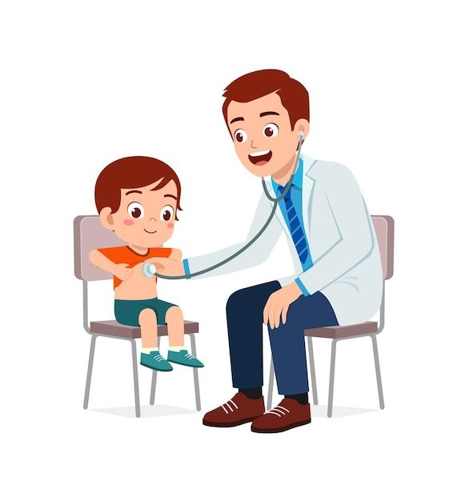
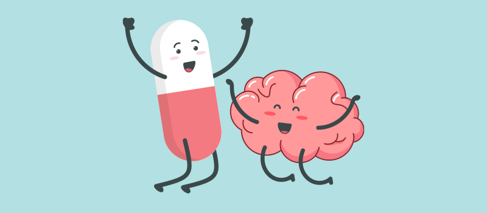
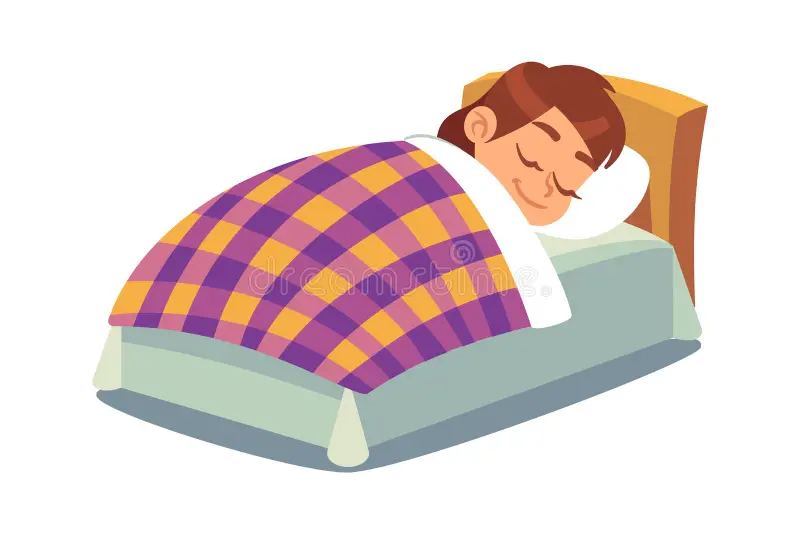
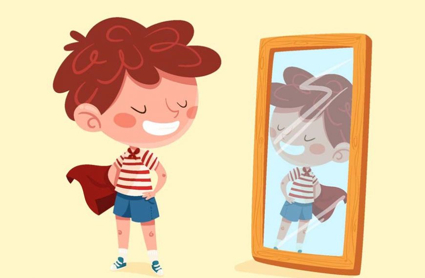

Improving Your Sleep
Explore different techniques, remedies, and medications that can help you sleep better.

Seek Professional Help
If you're struggling with chronic sleep issues, it may be time to consult a healthcare professional.
- If you experience persistent insomnia lasting more than three weeks, seek help.
- If you suffer from sleep apnea (pauses in breathing during sleep), consult a doctor immediately.
- If medications or natural remedies aren't helping, a sleep specialist can help identify underlying causes.
- If sleep is significantly affecting your daily life (concentration, mood, energy), professional guidance is recommended.

Medications for Sleep
In some cases, medications can assist with sleep disorders. Here are some common options:
- Melatonin: A natural hormone supplement that helps regulate sleep-wake cycles.
- Valerian Root: An herbal supplement used to reduce anxiety and promote relaxation.
- Diphenhydramine: An antihistamine that causes drowsiness and is used in over-the-counter sleep aids.
- Prescription Medications: Such as benzodiazepines or non-benzodiazepines, prescribed for serious sleep disorders like insomnia.

Sleep Improvement Techniques
Relaxation, establishing a consistent routine, and creating a calming sleep environment can improve the quality of your sleep.

Additional Sleep Remedies
Here are some natural remedies you can try for better sleep:
- Warm Milk: Contains tryptophan, an amino acid that helps to induce sleep.
- Lavender Aromatherapy: Known for its calming effect, lavender essential oil can help with relaxation before bedtime.
- Herbal Teas: Chamomile and peppermint teas can soothe the body and mind, promoting better sleep.
- Regular Exercise: Engaging in regular physical activity during the day can help improve sleep quality at night.
- Avoid Stimulants: Limiting caffeine or nicotine intake, especially in the evening, can help you fall asleep faster.
Watch Videos on Sleep
Sleep Affects on Brain
Let the Brain Sleepzz !!